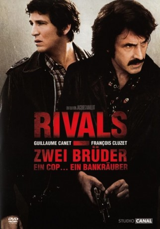

#5471 Rivals
 
 IMDB-Wertung: 6.3 / 10
IMDB-Wertung: 6.3 / 10  Metascore: 0
Metascore: 0 
Frankreich in den 70er Jahren. Francois und Gabriel sind Brüder, wie sie unterschiedlicher kaum sein könnten. Der eine ist ein guter, strebsamer Kerl, der zum braven Sohn und Polizisten wurde, der andere ein impulsiver, rebellischer Schwerenöter, der folgerichtig im Knast landete. Nun kommt Gabriel gerade mal wieder aus dem Gefängnis frei, und Francois will ihm nach besten Kräften helfen, eine bürgerliche Existenz zu gründen. Dafür lässt er Beziehungen spielen, riskiert gar, als es eng wird, seine Karriere. Gabriel aber dankt es ihm schlecht.
Jahr: 2008
Dauer: 107 Minuten
FSK: 16
Land: Frankreich Studio: Ascot Elite Home EntertainmentTonspuren:
Untertitel:
Auflösung: 1080p (1920x816) Größe: 8140 MB
Genre: Action, Drama, Krimi
Regisseur: Jacques Maillot
Drehbuch: Eagle Rock Film Productions
Soundtrack:
Darsteller:
 Guillaume Canet als François
Guillaume Canet als François François Cluzet als Gabriel
François Cluzet als Gabriel- Clotilde Hesme als Corinne
 Mehdi Nebbou als José Lazaga
Mehdi Nebbou als José Lazaga- Julien Piguet als Braqueur #4
- Alban Casterman als Le planton
- Marie Denarnaud als Nathalie
- Olivier Perrier als Henri
- Carole Franck als Monique
- Hélène Foubert als Colette
- Eric Bonicatto als Paulo
- Alain Beigel als Briquet
- Thierry Levaret als Martial
- Marc Bodnar als Gérard
- Stéphane Gitton als Jumeau #1
- Laurent Gitton als Jumeau #2
- Virgil Leclaire als Le fils de François
- Geordy Monfils als Le fils de Gabriel
- Chloé Leroi als La fille de Gabriel
- Fred Ulysse als Louison
- Alain Ussel als Le gérant du restaurant
- Nadia Fossier als Jacqueline
- Pierre Pellet als Charles
- Cyril Couton als Fernand Lazeau
- Patrick Harivel als Le petit chef
- Marie Gili-Pierre als Maryvonne
- Ludovic Dedier als Le fils de Paulo
- Sophie Parel als L'employée du Progrès
- Rodolfo De Souza als Le concierge
- Luc Thuillier als Le commissaire Blanqui
- Laurent Soffiati als Lardot
- Laurent Besançon als Touati
- Joseph Malerba als Braqueur #1
- Thierry Saelens als Braqueur #2
- Michaël Vander-Meiren als Braqueur #3
- Bruno Paviot als Un inspecteur
- Daniel Isoppo als Le conseiller municipal
- Philippe Le Dem als Proxénète 1
- Cyrille Labbe als Proxénète 2
- Thierry Nenez als Le client de Monique
- Daphné Tarka als La fille de Corinne
- Husky Kihal als Frère de José #1
- Rodolphe Couthouis als Frère de José #2
- Philippe Saïd als Le pompier
- Aline Chaud als La femme policier
- Didier Nobletz als Le braqueur de l'Intermarché
- Patrick Bonnel als Le patron du SRPJ
- Muriel Riou als La prostituée tabassée
- Michel Delannoy als Le petit vieux
- Marie-Charlotte Salmon als L'infirmière
Datei: X:\2008(N-Z)\Rivals (2008, FSK16, 1920x816).mkv seit 03.02.2017
Festplatte: HD 2008(G-Z)-2009(A-F)
 Es gibt insgesamt 91 Filme in der Gruppe '2008(N-Z)'
Es gibt insgesamt 91 Filme in der Gruppe '2008(N-Z)'